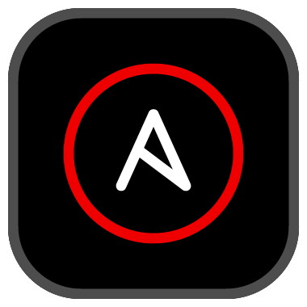

From individual setup to enterprise workspace
Presenter Name — Title
The Challenge
Months before writing a single playbook
The Toolchain
Deep Dive
Module A — ADT Deep Dive
Module A — ADT Deep Dive
--fix for common violationsModule A — ADT Deep Dive
The Journey
pip / uv
~30 min
Low consistency
RPM
~15 min
Medium consistency
Dev Container
~10 min
High consistency
Dev Spaces
~5 min
Highest consistency
The Workflow
Write → Lint → Test → Iterate
Fast feedback, local or container
PR → GitHub Actions → Controller sync
Automated gates, compliance scanning
Deep Dive
Module D — CI/CD
Module D — CI/CD
Enterprise Scale
.devcontainer/ lives in the repo, versioned with codeEnterprise Scale
devfile.yaml defines everything: tools, config, extensionsDeep Dive
Module C — Dev Spaces Deep Dive
Module C — Dev Spaces Deep Dive
Module C — Dev Spaces Deep Dive
AI-Assisted Development
Deep Dive
Module B — AI Deep Dive
Module B — AI Deep Dive
Next Steps
1-day workshop
Red Hat demos feasibility
Deploy tooling, onboard teams
Grafana monitoring, iterate
Deep Dive
Module E — Migration
Module E — Migration
Red Hat is the world's leading provider of enterprise open source software solutions, using a community-powered approach to deliver high-performing Linux, cloud, container, and Kubernetes technologies.